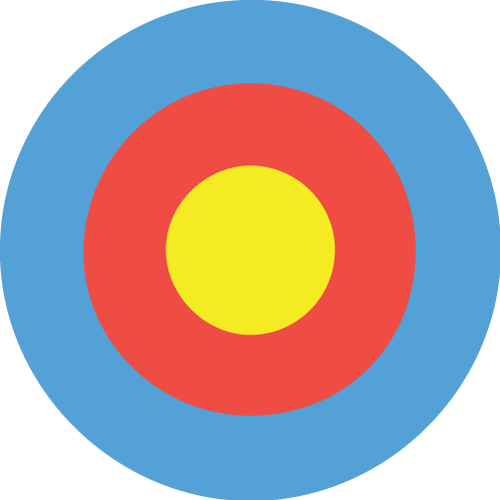
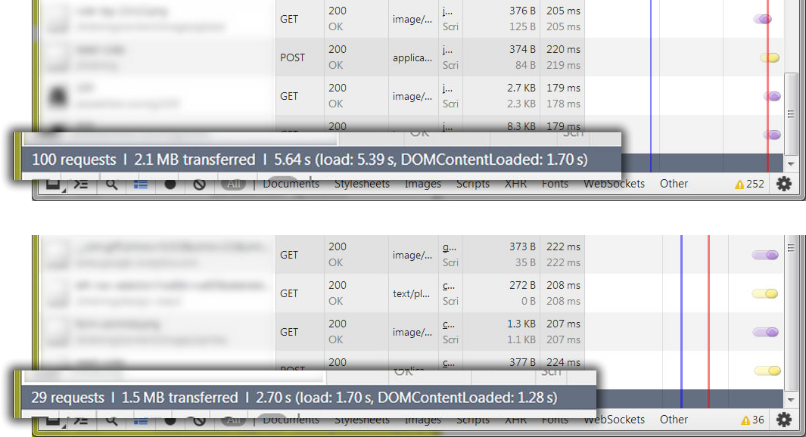

Dave Rodriguez
Director of Front-End Development at Hanson Inc.
@dave_rodriguez
Thanks to the Toledo Web Professionals for letting me speak tonight
Thanks to John Ewing for setting this up, and to everyone at Hanson who contributed material, helped
with the presentation, or sat and listened to one of my rehearsals
From the Toledo area
Developing for web 17 years
Except for 4 years at college in New York State, I've been in Northwest Ohio and
Southeast Michigan my entire life
Been with Hanson for 8 years
Been an interactive designer, a Flash developer, and most recently I've focused
on JavaScript development, responsive design, and improving our front-end processes
Welcome to the
Photo: x-ray_delta_one
Never been a more complex time to be in web development
The term "front end developer" didn't exist a few years ago
many of us probably started with a title like "engineer", maybe "designer" or maybe even "webmaster"
Front-end used to just be about knowing HTML and CSS, and maybe a little bit of JavaScript
These days, HTML and CSS have gotten more powerful and correspondingly more complex
Web development is also starting to look more like programming
Beware of killer robots
Photo: x-ray_delta_one
the web is getting more powerful (natively). we're doing things in the browser we wouldn't
have dreamed of 10 years ago.
things are moving very fast
feels like you could spend 40 hours a week just keeping up
It feels like there are killer robots around every turn
Don’t panic!
Photo: x-ray_delta_one
I'm here to tell you not to panic!
Your skills are as valuable as ever
You don't have to know everything about every technology you plan to use
Which is good, because there's no way anyone could
You don't have to build everything, because there are giant shoulders you can stand on
the people that invented space shuttles and killer robots didn't invent everything they used
They started from a foundation and built it up a little higher as they went
That's the new world of front-end development
Find some solid tools to build on, use them and customize them
Embrace the
You don't have to be a programmer to be a successful front-end developer
You should be comfortable using the command line and editing config files
If your command line skills are rusty, look for a tutorial to get up to speed. I'll post some links when I post the slides.
http://wiseheartdesign.com/articles/2010/11/12/the-designers-guide-to-the-osx-command-prompt/
http://webdesign.tutsplus.com/articles/a-designers-introduction-to-the-command-line--webdesign-6358
Part 1: Harness the power of robots
Photo: manosart
Some day, the robots will rise up and kill all humans
Until then, don't waste time
Use robot power to help you work faster by automating common tasks
When I say robots, I mean scripts. Utility programs that do one thing very well. You can
combine these in surprising and powerful ways.
downloading libraries and assets
generate boilerplate structure and markup
compiling things
test
optimize
Git
Git is a source control system
It's distributed, which makes sharing and merging code from multiple contributors pretty easy
How many people have a Github account?
If you do, you're in good company
Most of the libraries you'll be using are stored in Git repos. Github is the de facto standard
for publishing and accessing JavaScript code
If you don't already have it, get it here: [http://git-scm.com/downloads](), and get yourself
a Github account while you're at it.
Node.js
[Node.js](http://nodejs.org) is a standalone Javascript runtime based on Google’s V8 engine.
It brings JavaScript out of the browser and makes it a platform for all kinds of development.
NPM
NPM is a package manager for node. A package manager is a client for managing code libraries.
It provides a way to search for libraries and handles downloading, installing, and managing
dependencies and versions of that code.
A note for Windows users
Photo: x-ray_delta_one
The community is very Mac/Unix centric
Lots of the libraries and code examples you'll see assume you have access to unix and Some of the
tools. It's little things, like cp instead of copy, ls instead of dir.
It's 100% possible to use all these tools on Windows.
Expect occasional frustration, but it's generally not a problem.
Git installs some basic Unix command line utilities like cp, ls, touch
If you need to follow examples it's probably easier to install GNUWin32 or Cygwin than to dig around
for Windows equivalents.
Using the NPM registry
> npm init
> npm search libraryName
> npm install libraryName --save> npm install -g grunt-cli
From here on out you'll see a lot of commands scattered through the presentation.
As I said, you can search NPM from the command line, or you can also use the site at npmjs.org.
If you get involved with the community, you'll see exciting new projects announced on Twitter
and different mailing lists and blogs. Most of these are in NPM, or in Bower which we'll see in a bit.
(Fragment) It's important to note that NPM installs packages to the current folder. It assumes
you want to use the package on a per-project basis. You can use the
-g (global) flag
Exploring the terrain
Finding and installing code libraries
Like searching for water on mars?
What do you do now?
Open web browser
Google name of library
Browse to project home page or Github
Download a ZIP file
Unzip project files
Grab the file(s) you need and copy to your lib directory
Insert script reference in your project
Repeat 12 more times
Solution: Bower
> npm install -g bower
“Bower is a package manager for the web. It offers a generic, unopinionated solution to the problem of
front-end package management.”
Bower can be used to add code libraries to your site
Everything you want is already in bower
Get it from NPM (fragment)
The Bower Way
> bower init
> bower search library-name
> bower install library1 library2 --savePhoto: x-ray_delta_one
We saw how to install packages the hard way. Here's the bower way.
Bower init sets up a little file in the root of your project called bower.json, so you can
which keeps a list of what you have installed
Bower search works the same way as NPM search. You can also search the repo at bower.io. A lot of
times you don't even need to search. Popular libraries are registered with Bower using the same
name you already know. If you guess the project name you'll be right a lot of the time.
Now you install libraries. You can install more than one at a time, space separated.
That --save tells Bower to write your packages to the bower.json file. That's important later.
The old process had 8 steps...times 12. Here we've installed a bunch of libraries with
three commands. Let's call those steps 1 through 3.
Step 4 is insert your script references. Bower puts everything it downloads into a folder
called bower_components by default. This may or may not be useful to you. You can either reference
files straight from there, or you can move them wherever you want. Then you'd insert script tags,
stylesheet references, or whatever's appropriate for this particular library.
Later on when we look at Grunt, we'll look at a way to simplify this process so you only have
to insert one reference for all your Bower dependencies.
That was step 4. Step 5 is take a nap. In a space suit. Cause you're done.
In space, no one can
Photo: x-ray_delta_one
Who's familiar with the verb "to schlep"?
It's an awesome Yiddish word, and it means "to carry something heavy or awkward".
A lot of everyday tasks during development are just schlepping
Think about it. You're taking schlepping some LESS or SASS to the tool that makes it CSS.
You're taking some JavaScript to the tool that lints it, or minifies it
When those things are done, you're schlepping the output someplace
You don't need to be doing those things. What do you need, ulcers? That's robot work.
Some things are schlepping that you might not even consider
How about adding prefixes to styles in a stylesheet? Why should you be adding -webkit
and -moz to everything when we have perfectly good robots
What about reloading your web browser? Your cycle goes like this: edit file. Save. Alt-tab.
F5. See if it worked. That's a lot of needless schlepping.
A task runner can:
Compile
Transpile
Concatenate
Optimize
Copy
Composite
Web Serve
Live Reload
Grunt or Gulp?
We'll talk about two task Runners today, Grunt and Gulp
Both live in NPM
Both have similar capabilities
Both Need instruction files and plugins to help them help you
Grunt has gruntfile.js. Gulp has gulpfile.js.
Gruntfiles provide configuration in the form of deep objects. The action happens inside the
plugins.
Gulpfiles contain little procedural programs that chain together the output of many single-purpose
plugins.
Which one should you choose? Doesn't matter. Different approaches but both are good.
Grunt is older and has a larger ecosystem, but Gulp is catching up fast
Gulp requires a little more knowledge of programming, but plugins are well documented so you'll
catch on fast.
Sharing the wealth
> npm install
> bower install
Everything's better when you share
Remember the --save and --save-dev flags?
There's a debate about whether you should check NPM and Bower libraries into source control.
It's a lot of files, and it's not strictly necessary.
As long as you're using `--save` or `--save-dev`, all your dependencies get written to your
package.json and bower.json files.
The next person that comes along just has to run these two commands. npm install to install Grunt plugins,
and Bower install to install code libraries.
Theoretically, GitHub could be down or something and the next developer would be very sad. I guess that's
an argument in favor of checking everything in, but it's not super likely.
Robots in action
Photo: x-ray_delta_one
Grunt connect
Change text - watch - live reload
Compile LESS
Auto prefixer
There's also a Grunt plugin, [grunt-bower-concat](https://www.npmjs.org/package/grunt-bower-concat) that can take all your
Bower dependencies and concatenate them into a single file so you don't need to add a reference for every new library you add
to your project!
Part 2: Learn to pilot spacecraft
Photo: x-ray_delta_one
What's better than saving a bunch of time?
Saving a bunch of time and ending up with clean, maintainable, well-documented code
Take code structure to the next level
dependency management
separation of concerns
documentation
Yeoman
> npm install -g yo
Yeoman is a project scaffolding system. It can give you a fresh, clean project structure for many types
of apps
You should not need to rearchitect every project. that's robot work.
You can find Yeoman in NPM
To use Yeoman, you install various generators.
A generator is a template for creating an application, like a Bootstrap 3 app or an AngularJS app.
There are more than 600 generators available: http://yeoman.io/community-generators.html
Demo project setup
And let's say you don't like what you find.
Fork it, or make your own!
Creating generators is pretty easy. I've published three Yeoman generators so far.
Most Yeoman generators have Bower and Grunt integration already built in!
Assembling the fleet
Dependency management
Photo: x-ray_delta_one
I used to be an ActionScript developer
ActionScript is JavaScript's more respectable cousin
Had a lot of things that made it feel like a serious programming language, classes and inheritance and structure
And above all, great, simple dependency management
You never had to worry where your classes were coming from or whether they would leave you stranded at the bus stop in the bad part of town
So what does JavaScript have? Script tags
- Script tags are not a dependency management strategy
- You, the developer, are 100% responsible for enforcing that all your dependencies are loaded, at the right time, in the right order
- This encourages some people to put all their JavaScript into one file
- Technically it works, but that's bad for business
- Try making something like that work with half a dozen developers pulling late nights
- Discrete classes = looser coupling, better maintainability and encapsulation
- The more classes you have, the more likely you are to run into out-of-order dependencies
What’s better than script tags?
Anything, really!
Solution: Require.js

> bower install requirejs
Require.js is a JavaScript file and module loader.
Require.js helps you manage dependencies so you don’t have to worry about the order in which scripts
are loaded
Has a powerful build process so you can deploy pre-built versions of your script to production (Browserify also has this).
You can install it with Bower (fragment)
require() and define()
Require.js has two basic methods, require() and define().
`require()` loads scripts asynchronously based on a slash-separated path, like this:
```require("APP/controllers/main");```
`define()` exports Javascript modules in such a way that require can keep track of them. Require.js
keeps a
registry of modules it’s already loaded, so if you need a class more than once it isn’t loaded multiple
times.
What about
No problem. Require.js’s config file allows you to shim non-AMD Javascript. Shimming looks like this:
Now I can require('lib/jqueryui') in my classes, and it will added the AMD registry. Require will also make sure
all dependencies are loaded when this one is requested.
```
shim: {
'lib/jqueryui': {
deps: ['lib/jquery']
}
}
```
Building and deploying require.js
The Require.js optimizer combines related scripts together into build layers and minifies them with
UglifyJS or Closure Compiler.
It scans your require() statements, loads all the dependencies and inlines them into the top of the
file. Then it minifies everything and outputs it to a directory of your choosing (we prefer
js-built).
This makes it trivial to select the /content/js directory (for dev) or /content/js-built (for
staging and production). Nothing else needs to change in your code or your config!
Loader plugins
Require.js also supports loader plugins to support dependencies that are not plain JS files
Examples include text files, JSON, CSS, images, strings for i18n
Full list of plugins on the require.js wiki [https://github.com/jrburke/Require.js/wiki/Plugins]()
Speed improvements

Building your Require app before deploying it has huge benefits!
Integrating with a build process
The Require.js optimizer can be run as a build task with node or with Rhino for Java. Node is much,
much faster.
On one project, the Require.js build takes ~60 seconds locally with Node, but over 10 minutes(!!) when
run as part of the build using Rhino.
To improve performance, set skipDirOptimize: true, and minify your third-party JS libraries some other
way.
Avoid orbital debris
Client side templating
The old way
for (var i in products) {
tmpl = '';
tmpl += '';
tmpl += ' ';
}ಠ_ಠ
Solution: Handlebars.js
Handlebars is a templating engine
Web services are a giant step forward in terms of data portability and reusability
A big part of that is having lightweight back ends and powerful front ends
We're building interfaces on the client side
In the past, we did this by compositing strings.
The Handlebars way
{{#each Products}}
{{/each}}ʘ‿ʘ
You can put this in a hidden script tag (with a type of x-handlebars-template)
But you should put it in an external file and load it however you want
Require.js has a loader plugin that will load and parse Handlebars for you
Binding data
var myTemplate = Handlebars.compile(tmpl);
var modelObject = {
Name: 'Berkshire Canterbury Black',
ProductLine: 'Berkshire',
Category: 'Roofing',
ColorFamily: 'Black'
ProductID: 'RF106'
};
var output = myTemplate(modelObject);
here's an example of how you would bind data to a Handlebars template
we've already loaded the string in somewhere
We ask Handlebars to compile the string into a template. What this does it make it a function, which takes any JavaScript object and returns HTML
Now with more logic!
Loops!
Partials!
Conditionals!
Custom helpers!
Owens Corning Design EyeQ®
Powerful spacecraft
Photo: x-ray_delta_one
reinforce notion that you need to comment things
why comments
multiple developers
you in six months
JSDoc
/**
* @name JSDoc
* @desc Tool for generating HTML docs
* from structured JavaScript comments
*/
# About JSDoc
- JSDoc ([http://usejsdoc.org/]()) is a tool for generating HTML documentation from structured JavaScript comments
- JSDoc 3.3 runs in Node.js (or Mozilla Rhino) and can be installed with npm
```npm install -g jsdoc```
- Once installed, navigate to where your JS files are located in a terminal and run this command:
```jsdoc -r .```
http://blog.fusioncharts.com/2013/12/jsdoc-vs-yuidoc-vs-doxx-vs-docco-choosing-a-javascript-documentation-generator/
JSDoc tags
/**
* @constructor
* @alias APP.ui.configurator.VizProduct
* @extends APP.ui.configurator.VizItem
* @param {jQuery} target
* @param {Object} productData
* @classdesc A component of a design, such as a
* shelf, basket or upright. VizProducts can be
* manipulated and resized by users and can have
* rules applied to them.
*/
- Syntax is very similar to Javadoc.
Any comment beginning with /** is interpreted as a JSDoc comment.
// not picked up by JSdoc
/* not picked up by JSdoc */
Don't put everything in your JSdoc
You can add meaning with tags
Adding JSdocs to your code will force you to think more about the code you're writing
Write code like you're writing an API... because you are
There are lots of ways to document common patterns.
See the tag dictionary usejsdoc.org
JSDoc Default Template
Let's look at that default template
Is that ugly or what?
The information about classes is good
But it's severely lacking in navigation and organization
Use DocStrap instead
> npm install ink-docstrap
DocStrap Template
Fortunately we have an alternative
JSDoc supports publishing templates
There aren't many, but there is a very good one called Docstrap
It's in npm
npm install ink-docstrap
Includes a nice pulldown top menu, search, and a fixed navigation bar in every class and module
Spend less time
Photo: x-ray_delta_one
what do we hope you've learned
ways to save time
a little about some of the common tools that are out there
motivation
solutions to common problems
Spend more time exploring
You’ll find some pretty amazing things!
Photo: x-ray_delta_one
Use tools and frameworks
Build upon what others have done
Contribute back when you can


 ';
tmpl += '';
tmpl += '';
tmpl += '' + Name + '';
tmpl += '' + ProductLine + '';
tmpl += '';
tmpl += '';
tmpl += '
';
tmpl += '';
tmpl += '';
tmpl += '' + Name + '';
tmpl += '' + ProductLine + '';
tmpl += '';
tmpl += '';
tmpl += ' {{Name}}
{{ProductLine}}
{{Name}}
{{ProductLine}}